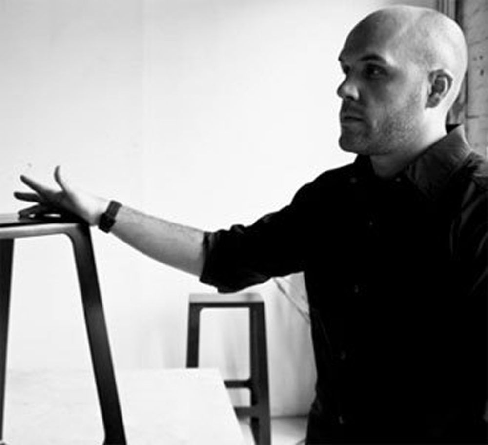

Jonathan Nesci
American designer, Jonathan Nesci (b. 1981)
Artist and Designer
Jonathan Nesci started designing furniture more than a decade ago. His interest in design and its history was further developed when he served as restoration manager at Wright Auction in Chicago. Jonathan works with various fabricators in the Midwest in materials such as aluminum, bronze, titanium, wood, glass and concrete and uses processes not typically found in furniture production to create precise digitally produced forms.
Process and Concept
Jonathan Nesci has developed a parametric grid based on the Golden Ratio and has experimented with new materials and manufacturing processes rigorously pushing forms around this near endless system. The tables in 100 Variations are perfectly proportioned around this grid where each has a unique profile and where every point is reasoned within this three-dimensional system. A very similar thread is present in Eliel Saarinen's work as he looked to the order in these natural geometric systems.

This is a caption

This is a caption
Past Work
Nesci's work has been featured in solo shows at Chicago’s Volume Gallery, New York’s Patrick Parrish Gallery and numerous group exhibitions with Casati Gallery. Nesci’s designs have been included in exhibitions including New York's ICFF, with Casati at Design Miami, Pavillon of Art & Design in Paris, Design Art London, Collective Design Fair in New York, Milan's Salone del Mobile, American Design at the American Center for Art & Culture in Paris and most recently in CHGO DSGN curated by Rick Valicenti of Thirst in Chicago. He has received international recognition from publications including The Wall Street Journal, Wallpaper, Surface, PIN-UP, W, Cultured, Interior Design, Dwell, Art +Auction and Architectural Digest. Jonathan was also the recipient of the annual Wallpaper Design Award for his Library Bookcase, a minimalist shelf sculpted in aluminum and commissioned by Ugo Alfano Casati Gallery in Chicago.
PAST WORK
Nem qui as exped erum fugiae nimpos sam dolectas dolorem postrum faciunt, consequam quam experum vent, id quatior porenimet acit volor re consed qui conem essuntur aut laboria vendemperis dolupta tendam vel maio blandit litatii strum, seque dempor as sed experor solectem ea voles se omnit, est voluptatur, endae coruptis asimint.

This is a caption